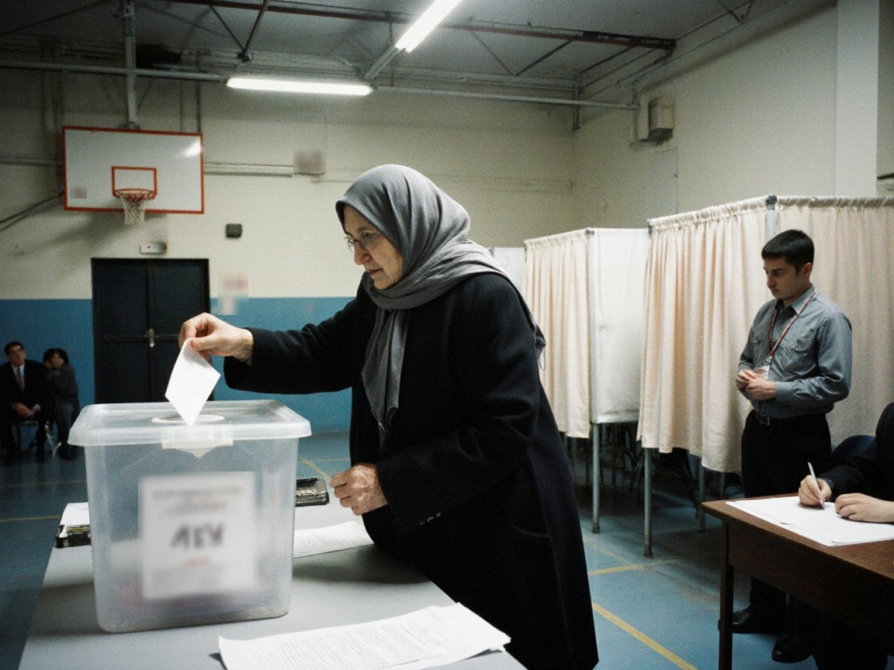

Election Commission to Issue 2027 Campaign Guidance Before Nominations Open 1 June
Responding to a Mejlis deputy's question on public employees, the Territorial Election Commission says its calendar is on track and its conduct guidance will come well ahead of the vote.

Photo: Irad Wiki Commons
TALAS — The Territorial Election Commission will publish its guidance for the 2027 campaign before nominations open on 1 June, its chairman, Daniyar Borubaev, said this week, answering a written question from a Mejlis deputy about the place of public employees in the campaign.
Kseniya Shubina, who represents a Nurzhan constituency on a civic list and was a school director before entering the Mejlis, asked the Commission whether teachers, clinic staff and city and district clerks may take part in campaigning for a ticket, or be asked to speak for one at work, and what protection they have if they decline. The Talas Herald reported the letter on Saturday.
Mr Borubaev said the preliminary calendar, adopted as Decision 2026/4 on 30 September, fixes the dates of the process but does not deal with staff conduct, which the guidance will address. He said it would be issued "before nominations open on 1 June". He did not describe its content, and the ministries had no comment when approached.
The calendar itself is unchanged and, the Commission says, on schedule: the voter register is revised from 1 March, nominations run from 1 June to 2 August, registration is decided by 15 September, and the campaign begins on 1 October ahead of the vote on 2 November 2027.
The question reaches a large part of the workforce. Of the ISEZ's roughly 690,000 formal jobs, about 260,000, or more than a third, are in the public sector and state enterprises.
The Teachers' and Educators' Union, whose 38,000 members include many of those staff, welcomed the request for clarification. "Our members should know where the lines are before the season starts," its chair, Rahat Osmon kyzy, said, adding that the union does not choose candidates.
With more than eleven months to polling day, the Commission has time to set out clear rules in good order, and the chairman's undertaking puts the guidance on the public record months before the first nomination papers are filed.
Related coverage: Deputy asks Commission if 260,000 public staff may campaign in 2027 (Talas Herald)
More from IradOne
- Meningitis Cases in the ISEZ Fall 35% in Ten Months, to 13 From 20 November 28, 2026
- Iradenergo to Study 2 MW of Floating Solar on Kyzyl-Adyr Reservoir November 27, 2026
- Iradiya Takes Delivery of Extra E190 With New Cabin; Winter Timetable Holds November 27, 2026
- Lower Naryn Registers 71 New Firms in Nine Months, 520 Jobs Declared November 26, 2026